Turbo Jet: Covert-OPS Table
| Section | Topic | Key Details |
|---|---|---|
| Overview | Turbo Jet Protocol | Turbo Jet is a codename for an elite tactical movement protocol, not a weapon or device. Emphasizes speed, precision, coordination, disciplined routing, strategic looting, and controlled engagements. Requires strong map awareness and high-level team coordination. |
| Preparation | Key Management | Purple Keys: Best for full teams, highest loot return. Blue Keys: Best for solo/duo, still provide seasonal crates on failed runs. Gold Keys: High risk; recommended only for coordinated teams with strong DPS and teamwork. |
| Preparation | Loadout Preparation | Recommended Mashmak weapons, purple-tier gear sufficient. NPC clearing weapons: Howitzer, Charge Blaster, Twin Rocket Launcher, Hex Rocket Launcher. Movement combos: Sword + Charge Blaster, Thermal Sword + Howitzer. Melee boosting consumes energy only, not durability unless hitting a target. Bring large ammo reserves due to heavy weapon consumption. |
| Preparation | Recommended Mechs | Pinaka: Fast NPC clearing. Serenith: Sustained routes. Inferno: High burst damage. Luminae: Aerial mobility. Alphard: Extreme mobility & gold chest scouting. Hurricane: High survivability with shields/drones. Aquila: Airborne booster mech with strong ranged burst. |
| Preparation | Suggested Equipment | Suppression Pack Glider (Gold/Purple), Enhancement Glider (for DPS), plus ammo, repair kits, cargo rockets, extra keys. Optional: Extraction Beacon (slow activation). |
| Boss Strategy | Makalu Fast Kill | Stay behind Makalu. When he charges/spins, back armor opens exposing weak spot. Use burst weapons (Howitzer / Charge Blaster). Kill possible in under 30 seconds with good timing. |
| Boss Strategy | Makalu Spawn Conditions | Spawns by killing enemies in zone or RNG selection. Appears only in Covert Mode (Middle). Higher spawn chance in Coop mode. |
| Boss Strategy | Storm Dependency | Makalu and Constantine cannot spawn during Corite storms. Storms occur when Colossal Corite Extractors land. Destroying extractors reduces storms and increases boss spawn chances. Typical match has 5–6 extractors. |
| Core Strategy | Player Mode Strategy | Solo: Use Blue Keys. Teams: Use Purple Keys. Highly coordinated teams: Attempt Gold Keys. |
| Core Strategy | Map Entry | Any entrance works as long as one door is opened. |
| Core Strategy | Essential Items | Recommended: 2–3 Cargo Rockets, 1 Repair Kit, 1 Weapon Bay, 1 Blue Key. Optional slots: ammo, extra rockets, repairs, keys, extraction beacon. |
| Core Strategy | Loot Priority | Focus on Glider weapons/parts, Seasonal Chests, Black Boxes, Corrupted Cascade Engines, RZ Keys, Gold/Purple Mod Chests. |
| Core Strategy | Loot to Ignore | Skip low-tier guns, low-tier support modules, green/white Corrite, blue/green mod packs, unused ammo. |
| Late Game | Endgame Tips | After Makalu, target Constantine. Clear turrets first, move early to avoid storms, prioritize energy-efficient mechs, avoid rushing engagements. |
| Advanced Techniques | Mobility Tricks | Melee Boosting: Swing melee without hitting to gain flight speed. Tier 5 Gliders: Best for mobility. Suppression/Enhancement Gliders: Improve movement & combat output. |
| Advanced Techniques | Boss Spawn Setup | Destroy all Colossal Extractors to trigger Constantine spawn. |
| Advanced Techniques | Cargo Rockets | Each rocket allows +3 stack deposits per player, increasing resource efficiency. |
| Inventory | Inventory Management | Sell Corrupted Engines for Blue Coins, carry only needed ammo, scrap guns below blue tier, keep mods installed in mechs, combine low-tier mods with Blue Coins for upgrades. |
| Route Flow | Step 1 | Drop your Modular Weapon and Ammo |
| Route Flow | Step 2 | Destroy Colossal Extractors 5 - 6. |
| Route Flow | Step 3 | Meet at the Midlle and Destroy Makalu. |
| Route Flow | Step 4 | Destroy Large Splitter / Drilling Rig and check Gold Box locations. |
| Route Flow | Step 5 | Destroy Frigates. |
| Route Flow | Step 6 | Locate and kill Constantine. |
| Route Flow | Step 7 | Complete Gold / 2 Purple Restricted Zones. |
| Route Flow | Step 8 | Extract after clearing Small Extractors, Troopship, and Martlet targets. |
| Team Composition | Example Turbo Jet Team | Alphard: Modular Weapon V. Pinaka: Suppression Glider V + Modular Weapon V. Stella: Support Glider V + Modular Weapon V. Inferno: Sword + Suppression Glider V + Modular Weapon V. |
| Personal Role | Alphard / Skyraider / Falcon Route | Spawn → Deploy modular weapon → Destroy extractor legs (each extractor has 4 legs). Extractor spawn locations change each match. |
| Mid Run | Combat Objectives | Team destroys 5 Extractors → Makalu → Frigates → Gold Boxes → Blue/Silver Boxes → Drilling Rig → Large Splitter. |
| Mid Run | Boss Progression | After map clearing, engage Constantine and destroy. |
| Dungeon | Hellcat Gold Key | Use Gold Decoy placed in center immediately upon entering for safer deployment. |
| Encounters | Hellcat Strategy | Fight normally if team has sufficient coordination and DPS. |
| Encounters | Morena Strategy | Use “in-and-out” method — engage briefly and disengage to avoid heavy damage. |
| Performance | Strategy Reliability | Approx 7.5/10 success with random teams, up to 9.5/10 with coordinated teams familiar with route. |
| Mech Builds | Effective Configurations | Pinaka: Suppression Glider + 2 Auto Splitters V. Stella: Support Glider + Charge Blaster V + Auto Splitters V. Inferno: Sword + Charge Blaster burst build. Alphard: Dual Auto Splitters V mobility. Skyraider: Auto Splitters V + Charge Blaster flexible DPS/scout. |
| Speedrun Strategy | Team Mindset | Maintain KWTD (Know What To Do) mentality, run Mobility Kit + Suppression Glider V, keep constant communication. |
| Speedrun Strategy | Scouting Role | Alphard / Skyraider scout for Gold Boxes and Makalu. |
| Speedrun Strategy | Clear Role | Pinaka handles fast clearing using frequent Aux 3 bursts. |
| Objective Priority | Standard Run Order | Makalu → Constantine / Gold Key → Purple Keys → Gold Boxes → Frigates → Remaining POIs. |
| Success Factors | Performance Breakdown | Mobility: 35% success factor. Pathing & objectives: 25%. Team execution & DPS: 20%. Mech synergy & builds: 20%. |
| Research | Research Cost | Research Time |
Extraction Beacon Drive
Extraction Beacon Core
Extraction Beacon Framework
 1000 - 2000 1000 - 2000 |
2 - 10 minutes | |
 |
Material Framework Module
Cascade Engine Module
Aerodynamic Module
1,000 - 16,000 |
12 - 60 hours |
| Recon Device Driver
Recon Device Core
80 - MatrixCredit 400 - MatrixCredit |
10 - 50 minutes | |
 |
Repair Station Driver
Repair Station Core
40 - 200 |
2 - 10 minutes |
| Strikers | Strengths | Weaknesses |
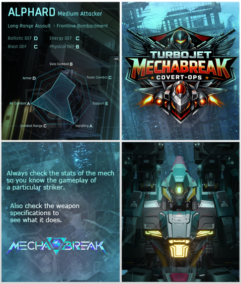 |
Strengths: High AoE Damage (A) and excellent Chain Control (B). Effective at punishing grouped enemies. | Weaknesses: Low Survivability (D) and slow Movement Speed (C). Vulnerable to sustained harassment and focused fire. The Counter: Outlast the Burst. Alphard excels in short windows of control and damage. Use mobile strikers or ranged units to dodge initial bursts, spread out to avoid AoE chains, and engage after cooldowns expire. Sustained harassment prevents Alphard from chaining stuns effectively. |
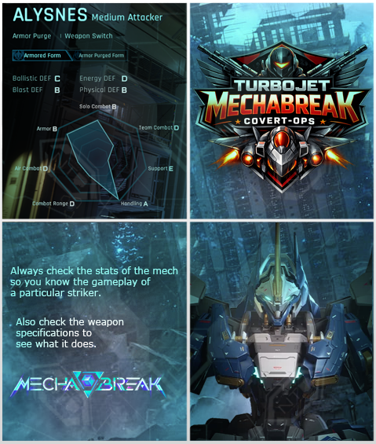 |
Strengths: High Handling (A) and solid all-around defense in Armored Form. | Weakness: Lower Energy Defense (D) and Combat Range (D). The Counter: Use Long-Range Snipers (like Aquila or Narukami) or Energy-based Strikers. Since it has low range, kiting it from a distance while exploiting its weak energy resistance is key. |
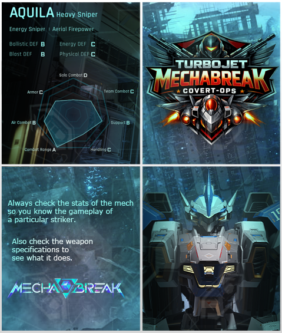 |
Strengths: Maximum Combat Range (A) and strong Air Combat (B). | The Counter: High-Mobility Close-Quarters Strikers (like Falcon). Snipers are vulnerable once you close the gap. Use mechs with high "Handling" and "Solo Combat" to outmaneuver it up close where its sniper rifle is less effective. |
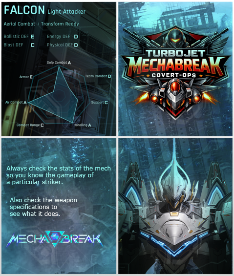 |
Strengths: Exceptional Air Combat (A), Handling (A), and Solo Combat (A). | Weakness: Extremely low Armor (E) and Ballistic Defense (E). The Counter: Heavy Defenders or AOE Attackers (like Hurricane or Mikillja). Falcon is a "glass cannon." It can't handle direct hits. Use high-accuracy ballistic weapons or wide-area attacks to catch it mid-air; even a few hits will likely ground it. |
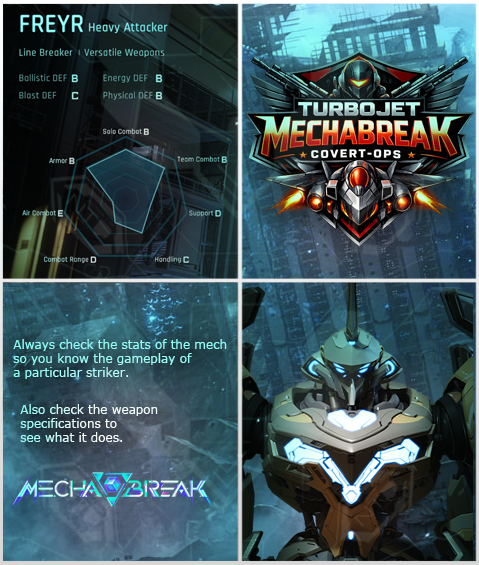 |
Strengths: Balanced defenses (B/B/B) and solid Solo/Team combat. | Weakness: Very low Air Combat (E) and Combat Range (D). The Counter: Aerial Strikers (Falcon) or Snipers. Freyr is a ground-based "Line Breaker." By staying in the air or at extreme range, you negate its "Line Breaker" utility entirely. |
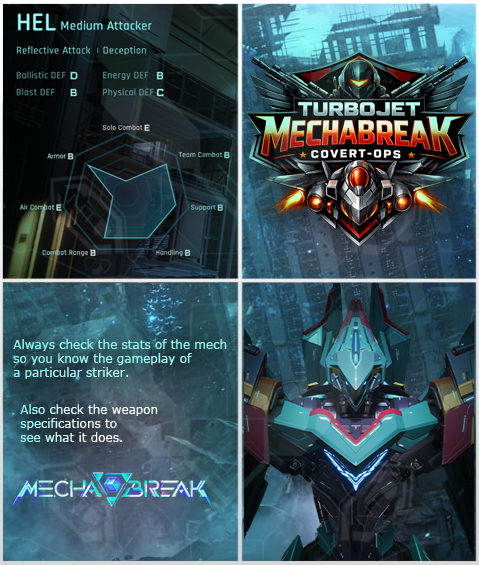 |
Strengths: High Energy Defense (B) and strong Support/Team Combat (B). | Weakness: Low Ballistic Defense (D) and Air Combat (E). The Counter: Ballistic-focused Attackers (Alysnes in Armored form or Mikillja). Since Hel relies on "Deception" and "Reflective Attack," use physical projectiles rather than energy beams to bypass its high energy resistance. |
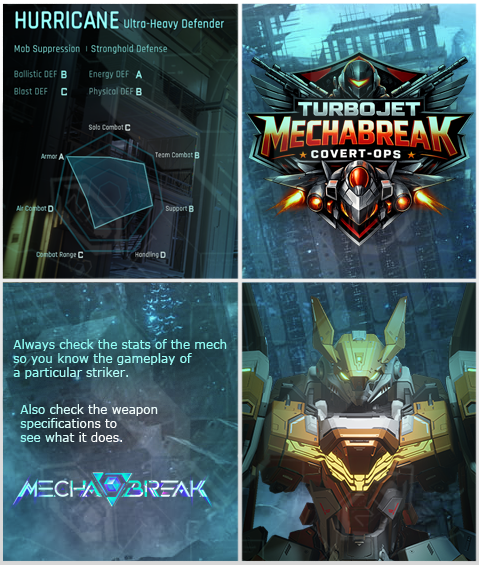 |
Strengths: Maximum Armor (A) and Energy Defense (A). | Weakness: Low Air Combat (D) and Handling (D). The Counter: Mobility and Physical/Blast Damage. Hurricane is a literal tank. Don't use Energy weapons against it. Instead, use mechs with high Blast damage to chip away at its armor, and use high Handling to stay behind its shield/slow turn radius. |
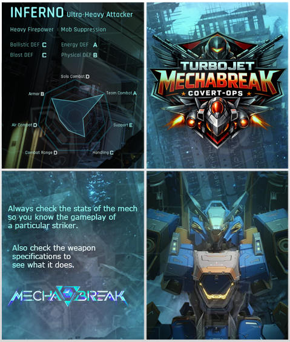 |
Strengths: High Team Combat (A) and Energy Defense (A). | Weakness: Low Solo Combat (D) and Support (E). The Counter: Solo Duelists. Inferno thrives in team fights ("Mobility Suppression"). If you can isolate it 1-on-1 with a high-handling striker (Alysnes or Falcon), it lacks the solo stats to defend itself effectively. |
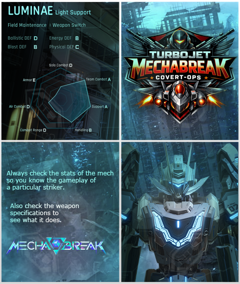 |
Strengths: Max Support (A) and Team Combat (A). | Weakness: Lowest Armor (E) and Ballistic Defense (D). The Counter: Prioritize as a First Target. Luminae keeps the team alive. Like the Falcon, it has E-rank Armor. Any dedicated attacker can delete Luminae quickly. Use a "Dive" strategy to bypass the front line and take the support out first. |
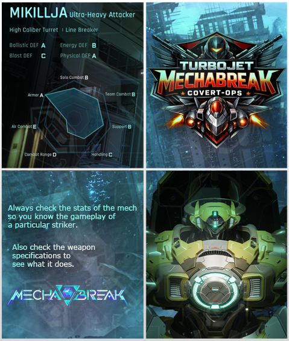 |
Strengths: Max Ballistic Defense (A), Physical Defense (A), and Armor (A). | Weakness: Very low Air Combat (E). The Counter: Energy-based Snipers and Aerial Combatants. Mikillja is a fortress against physical bullets. However, its Energy Defense is only a B, and it cannot fight back effectively against targets high in the sky. |
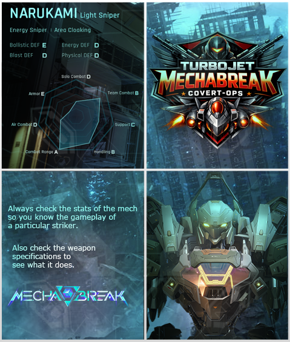 |
Strengths: Max Combat Range (A) and Team Combat (B). | Weakness: Lowest Armor (E) and Ballistic Defense (E). The Counter: Stealth or Fast Gap-Closers. Narukami relies on "Area Cloaking" and distance. Use mechs with high Handling to dodge incoming shots while closing the distance. Once you are in Solo Combat range, its E-rank Armor makes it a very quick kill. |
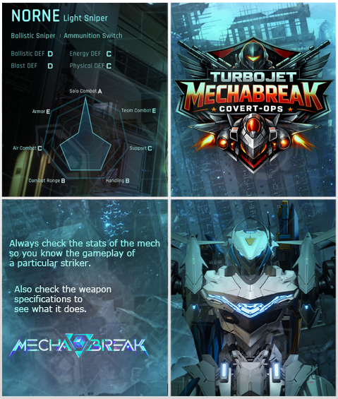 |
Strengths: Team Buffing (A) and AoE Debuffing (B). Provides strong support for allies and zone control. | Weaknesses: Low Offensive Pressure (D) and fragile against burst (E). Struggles to solo carry fights. The Counter: Focus Fire & Disrupt. Norne’s strength lies in supporting allies rather than direct combat. Target her first in team fights or push her out of range to neutralize buffs. Burst-heavy strikers or high mobility units prevent her from setting up optimal debuffs. |
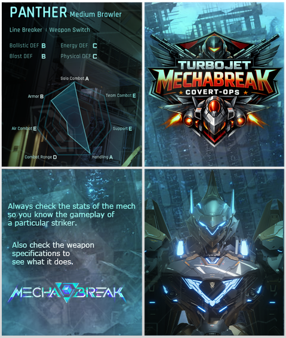 |
Strengths: High Handling (A) and Solo Combat (A); solid Armor (B) and Ballistic/Blast DEF (B). | Weakness: Lowest possible Air Combat (E), Team Combat (E), and Support (E). The Counter: Aerial Suppression. Panther is a ground-based duelist. Because it has E-rank Air Combat and low Combat Range, mechs like Falcon or Skyraider can hover above it and chip away at its health. Since it also has lower Energy DEF (C), using energy-based kiting is highly effective. |
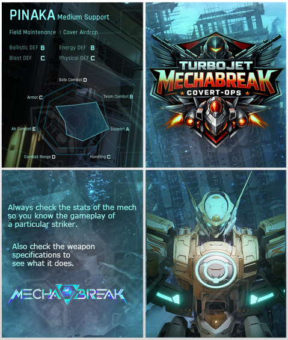 |
Strengths: Maximum Support (A) and strong Team Combat (B). | Weakness: Low Solo Combat (D) and Air Combat (E). The Counter: Assassin Dive. Like most supports, Pinaka cannot defend itself alone. Use a high-mobility striker to bypass the "Cover Airdrop" and force a 1v1. With D-rank Solo Combat, it will likely lose any direct engagement if isolated from its team. |
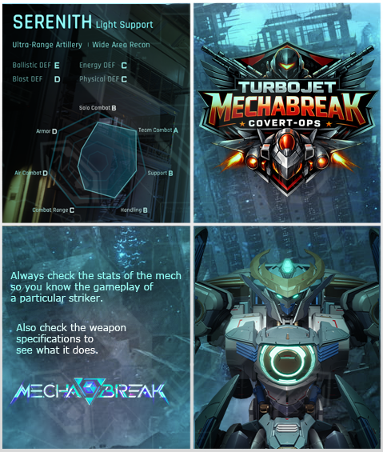 |
Strengths: Maximum Team Combat (A) and decent Solo Combat (B) for a support. | Weakness: Very low Ballistic DEF (E) and Armor (D). The Counter: Ballistic Artillery. Serenith is built for "Ultra-Range Artillery," but its own ballistic resistance is non-existent. Use a Sniper or Heavy Attacker with high-caliber ballistic rounds. Even though it has okay solo stats, it simply doesn't have the health pool to survive a direct trade of fire. |
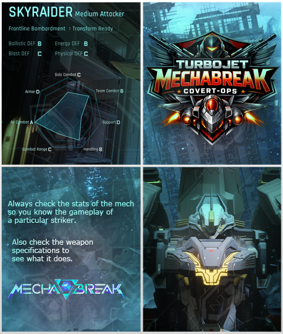 |
Strengths: Maximum Air Combat (A) and strong Team Combat (B). | Weakness: Low Armor (D) and Combat Range (C). The Counter: Anti-Air Ballistics. Skyraider needs to be in the air to be effective, but its D-rank Armor makes it fragile. Use Hurricane or Mikillja—strikers with high Ballistic DEF and decent range—to swat it out of the sky. It lacks the "Solo Combat" (C) to win a sustained dogfight against a dedicated anti-air build. |
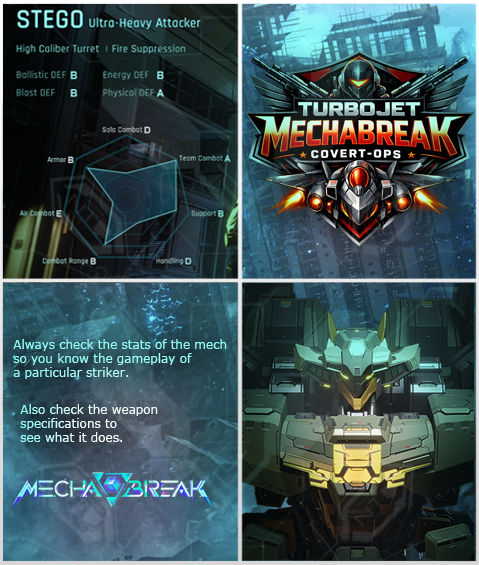 |
Strengths: Maximum Team Combat (A) and Physical DEF (A). | Weakness: Lowest Air Combat (E) and Handling (D). The Counter: High-Mobility Energy Attackers. Stego is a "Fire Suppression" tank that is very difficult to kill with physical weapons. However, its low Handling (D) means it turns slowly. Circle-strafe it with Stellarus or Alysnes, focusing on Energy damage to bypass its physical plating. |
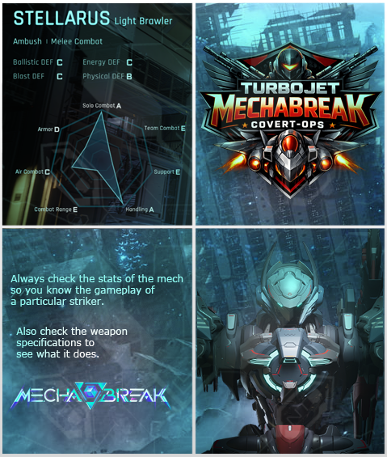 |
Strengths: Maximum Solo Combat (A) and Handling (A); strong Physical DEF (B). | Weakness: Lowest Team Combat (E), Support (E), and Combat Range (E). The Counter: Zoning and Range. Stellarus is an "Ambush" specialist that is deadly up close but helpless at a distance. Use Narukami or Aquila to keep it spotted and damaged before it can get within melee range. If it gets close, use mechs with high Blast DEF to survive its initial burst. |
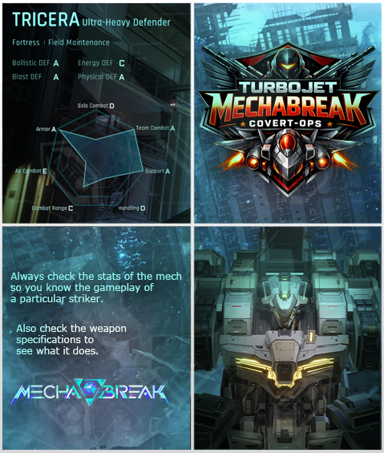 |
Strengths: Max Armor (A), Team Combat (A), Support (A), and Ballistic/Blast/Physical DEF (A). | Weakness: Lowest Air Combat (E) and Energy DEF (C). The Counter: Energy Bombardment. Tricera is a "Fortress" that is almost immune to physical and ballistic damage. Its glaring weakness is Energy DEF (C). Use energy-heavy strikers and stay in the air—Tricera has zero vertical presence (E-rank Air Combat) and cannot chase you. |
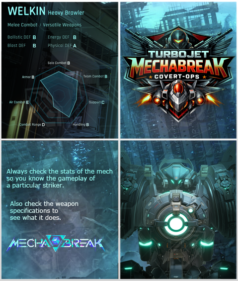 |
Strengths: Maximum Physical DEF (A) and solid Solo/Team Combat (B). | Weakness: Lowest Air Combat (E) and low Combat Range (D). The Counter: Kiting. Welkin is a "Versatile" melee threat with high physical resistance. To beat it, you must exploit its low range. Use a striker with B-rank or higher Combat Range and keep your distance. As long as you don't let it pull you into a physical brawl, it lacks the tools to close the gap effectively. |
| Tier and Strikers | Role | Reason - Reference Patch Notes and Dev Notes |
| Tier S: PINAKA | Medium Support | Repeatedly flagged as overpowered — topped win rates even after nerfs, devs watching closely |
| Tier S: MIKILLJA | Ultra-Heavy Attacker | Dominated Season 2 meta, environment kills, high pick rates, required multiple nerfs |
| Tier S: NORNE | Light Sniper | Top-tier utilization rate at S2 launch, then buffed further in Dec patch |
| Tier A: SERENITH | Light Support | Overperforming in specific match types, received nerf in S3; described as "almost completely intact" on acquisition |
| Tier A: ALPHARD | Medium Attacker | Overperforming in S3, nerfed; strong frontline bombardment kit |
| Tier A: NARUKAMI | Light Sniper | Consistent top presence, buffed extensively, Kanon TYPE-S variant is premium unlock |
| Tier A: STELLARUS | Light Brawler | Buffed multiple times through S1 and S2, solid stealth assassin |
| Tier B: WELKIN | Heavy Brawler | Multiple balance tweaks, received Custom; Defense Field nerfed but remains viable |
| Tier B: PANTHER | Medium Brawler | Frequently mentioned in feedback, received buffs in S3 (better Lance feel, shield restores); also got CUSTOM |
| Tier B: INFERNO | Ultra-Heavy Attacker | Several nerfs across seasons but energy/reload buffs helped; strong but inconsistent |
| Tier B: LUMINAE | Light Support | Buffed in S3 with lock-on and cooldown improvements; got CUSTOM, filling a distinct support role |
| Tier B: HEL | Medium Attacker | Low pick rate early on, received multiple buffs; versatile but skill-dependent |
| Tier C: ALYSNES | Medium Attacker | Balanced across patches, not flagged as over/undertuned; solid but unremarkable |
| Tier C: SKYRAIDER | Medium Attacker | Hit with nerfs in S1, then given reload buff in S2; described as struggling with ammo |
| Tier C: HURRICANE | Ultra-Heavy Defender | Consistently underperforming its defender role, reactive playstyle; multiple reworks still ongoing |
| Tier C: TRICERA | Ultra-Heavy Defender | Buffed in S3 (elevation angle, overhead defense) but previously considered slow/exploitable |
| Tier C: STEGO | Ultra-Heavy Attacker | Buffed in S3 (fire rate/reload parity), but consistently struggled in fast-paced battles |
| Tier C: AQUILA | Heavy Sniper | Low play rates, modest buffs; energy regen nerfs hurt sustain |
| Tier C: FALCON | Light Attacker | High skill ceiling but low impact; devs explicitly acknowledged it "not making much impact" in S2 |
| Tier C: FREYR | Heavy Attacker | Brand new in S3 — too early to place higher; bug-heavy launch, devs monitoring |